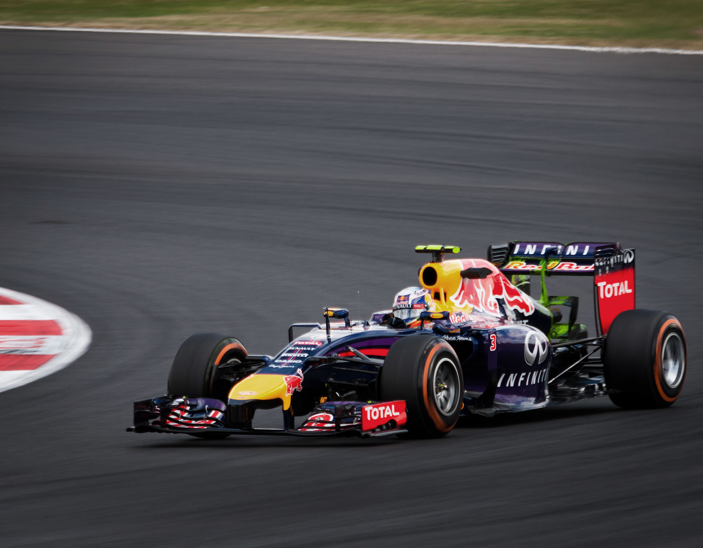
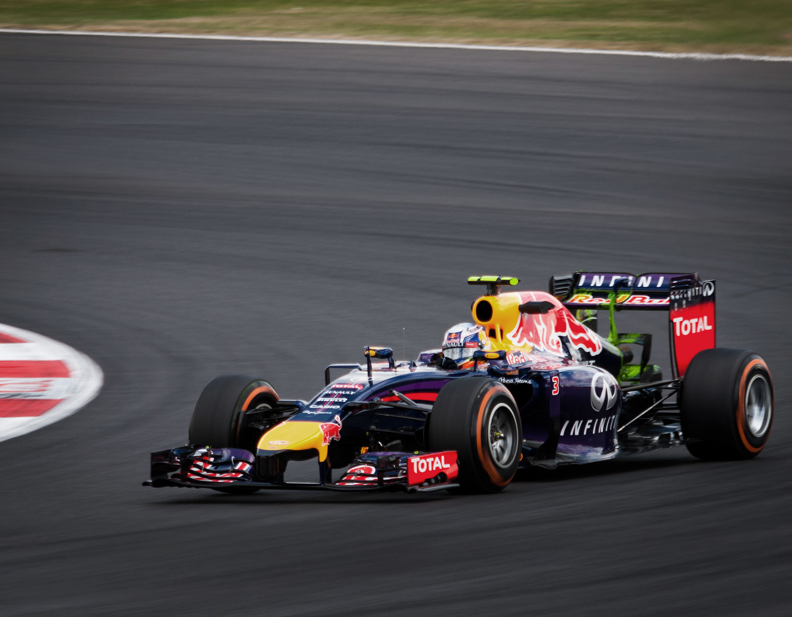

css3를 이용한 애니메이션

Artworks and illustrations were my gateway to the creative industry which led to the foundation of my own studio and to first steps in the digital world.
Starting with basic websites several years ago I found myself working as an Art Director for complex projects with a holistic approach soon. Visually appealing designs, subtle details and brand guidelines combined to innovative interfaces across various touch points became my daily companion.
Out of this love for aesthetic design my passion for functionality and structure evolved. Jumping right into Photoshop didn’t feel accurate anymore and skipping the steps of building a framework based on functionality and usability became inevitable.
A user-centered mindset and sensitivity for design turned out to be the perfect fit when collaborating with agencies, clients and brands to develop digital concepts and solve problems together.
This rough framework outlines my process of developing digital experiences:
Communicating the conceptual approach/UX strategy and reasoning behind it, is present during the whole process.
To achieve the goal of making the web a better place I trust in teamwork, latest technology and intuition.


 
